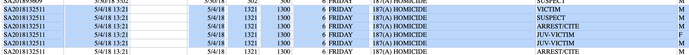
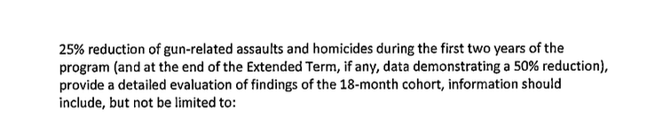
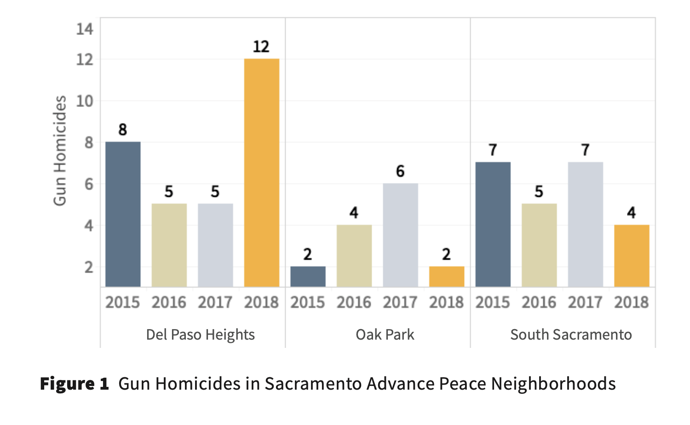
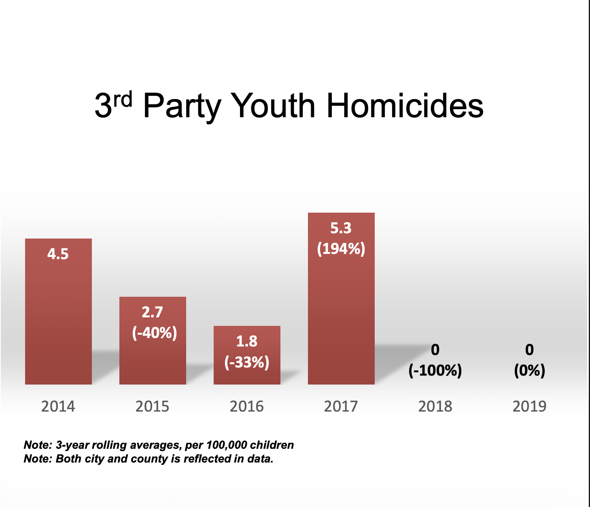

A program missed its contract. Its allies repeated a different claim for five years. The claim was contradicted by police records. Two children, ages 3 and 6, were shot to death inside the window. Nobody who promoted the program ever mentioned them.
At 13:21 hours on May 4, 2018, a 187(A) homicide call came in to the Sacramento Police Department from 2380 Meadowview Road in South Sacramento. The Department’s internal homicide records show two juvenile victims and at least one adult victim. The Department’s same-day public press release describes none of them as deceased.
The case is identified in SacPD records as 18–132511 (also referenced as SA2018132511). The author has obtained two separate California Public Records Act responses about this case from the Department. The first, PRA 24–391, produced the Department’s internal homicide person-level dataset titled GOPerson_09A2016_2019.19 That dataset records two juvenile victims in this case, a Hispanic female and a Hispanic male. The second, PRA 26–1016, is a written narrative response signed May 1, 2026 by Anna Johnson of SacPD Transparency and Compliance.19 That response identifies two children among the deceased victims of the case.

The two SacPD responses give different ages for the juvenile victims. The GOPerson dataset records the children as ages 10 and 13. The May 1, 2026 narrative response identifies them as ages 3 and 6. The Department has not, in either response, addressed or reconciled the discrepancy. A third Public Records Act request asking the Department to clarify the children’s ages is in progress as of publication. This article uses the framing both documents agree on: two juvenile victims, killed in case 18–132511, on May 4, 2018, in a 187(A) homicide. The exact ages are pending the Department’s clarification. The age discrepancy itself, between two responses about the same case, is part of the institutional record this article documents.
The third victim was Joseph Coln, age 34. On May 31, 2018, two adults were arrested in connection with the case: Charlie Wong (DOB 12/16/1996) and Kendrick Glenn (DOB 3/21/1997). Both were charged with first-degree murder under California Penal Code § 187(A), among other charges including a probation violation, felon in possession of a firearm, voluntary manslaughter, and possession of a weapon in a penal institution. Both were held without bail at Sacramento County Main Jail.19
2380 Meadowview Road is in Meadowview, in South Sacramento, one of the three named target neighborhoods of the Advance Peace Peacemaker Fellowship. May 4, 2018 falls four months and five days after the City of Sacramento’s first $250,000 contract payment to Advance Peace, dated December 29, 2017.02 The program was contractually active and paid. The fellowship had not yet enrolled its first cohort. The juvenile victims were children under 18. They died in the City of Sacramento, in 2018, in one of the program’s named target zones.
The Sacramento Police Department issued one press release about the incident. Reference number 20180504-045, dated Friday, May 4, 2018, titled “Shooting Investigation – 24th Street and Meadowview Road.”20 The text of the release describes one victim, alive at the time of writing:
The release describes one victim. Adult. Male. In critical condition at a local hospital. Alive. The release does not mention two children. It does not mention anyone dying. It also confirms that Homicide Detectives were called to the scene because of the severity of the injuries.20 Sacramento Police Department dispatches Homicide Detectives when an incident is, or is likely to be, a homicide. The release confirms in its own text that the department had reason to treat this as a homicide investigation at the time of writing, while reporting one critical-condition victim and no fatalities. The closing line of the release reads: “Additional details will be released as they become available.”20 No follow-up press release was ever issued. As of May 1, 2026, the original release remains the only public-facing SacPD account of the incident.
The release’s framing propagated to local television the same day. ABC10 Sacramento ran video coverage on May 4, 2018, headlined “Sacramento Police investigate shooting near Meadowview,” with the caption: “Police confirm that the victim was transported and is in critical condition.”20 Singular victim. Critical condition. Alive. The same misrepresentation, in the same language, in a major local news outlet on the day of the shooting. No follow-up coverage of the case, and no obituary or funeral notice that the author has been able to associate with this case, has been located in any Sacramento outlet in the public record.
The internal record and the public-facing record describe the same incident at the same address on the same date, and they describe different facts. The internal record shows three pronounced deceased on scene, including a 3-year-old girl and a 6-year-old boy. The public-facing record shows one adult male, hospitalized, with no fatalities reported. Both documents originated inside the Sacramento Police Department. Both are signed by department officials. Eight years passed between them. During those eight years, no member of the public, no reporter, and no city official asked the department to reconcile what its case file showed against what its press release said.
The natural-language reading of the press release, the only reading available to the public, is that one adult was shot in Meadowview on May 4, 2018, and was being treated at a hospital. That reading produced no follow-up coverage in any local outlet located in the open record. The children’s deaths did not enter the public record. The silence between the two documents is what made the next eight years possible.
On August 29, 2017, the Sacramento City Council voted nine to zero to bring the Advance Peace Peacemaker Fellowship to Sacramento.01 The Funding Agreement was signed in December 2017 by City Manager Howard Chan, Safe Passages CEO Josefina Alvarado–Mena, and Advance Peace Founder and CEO DeVone Boggan.02
The contract is eight pages. Section 5, subsection b, item 5 sets the program’s contractual benchmark in plain language:

The unit is gun-related assaults and homicides combined, citywide. The floor is 20 percent by Year 2 and 50 percent by Year 4. Two numbers, signed by three parties, on city letterhead.
The phrase “juvenile homicide” does not appear anywhere in the contract.02 Neither does “youth homicide.” The word “youth” appears in the staff report only as a reference to the Mayor’s general strategic priority to “Invest in our Youth.” The metric the program was hired to move was citywide gun-related assault and homicide reduction. Not a juvenile-specific subset. Not a stranger-killing subset. Not a per-100,000-children rate. The contracted unit is the unit that appears in the eight pages everyone signed.
The simplest possible test of whether the program worked is whether Sacramento had fewer murders during the contracted window than before it. The Sacramento Police Department’s own homicide totals are not in dispute.
| Year | Homicides | Program status | vs. 2017 baseline |
|---|---|---|---|
| 2016 | 41 | Before AP | +5 |
| 2017 | 36 | Before AP (baseline year) | 0 |
| 2018 | 36 | AP launched July (partial year) | 0 |
| 2019 | 35 | Original Peacemaker Fellowship full year | −1 |
| 2020 | 41 | State-funded extension; Youth Fellowship begins | +5 |
| 2021 | 58 | Final program year; city funding expires Dec 31 | +22 |
| 2022 | 47 | After AP | +11 |
| 2023 | 37 | After AP | +1 |
The contract’s original term ran from December 15, 2017 to December 31, 2019. Section 5(b)(5) required, at minimum, a 20 to 25 percent reduction in citywide gun-related assaults and homicides during the first two years of the program. The 2017 baseline was 36 homicides. A 20 percent reduction would mean 29 or fewer homicides in 2018 and again in 2019. A 25 percent reduction would mean 27 or fewer.
The program’s actual two-year output: 36 homicides in 2018, 35 in 2019. Across the original two-year term, Sacramento had 71 homicides versus the 72 the 2017 baseline would have predicted. The contracted reduction was approximately 1.4 percent. The contract’s minimum required reduction was missed by roughly nineteen to twenty-four percentage points.
Under Section 5(c) of the contract, the City had “sole discretion” to extend the program into Years 3 and 4. The contract metric had visibly failed in the original term. The City exercised the extension anyway.
The extended-term standard, per Section 5(b)(5), increases the required reduction to 50 percent. By the 2017 baseline of 36, that means 18 or fewer homicides in 2020 and again in 2021. The program’s actual extended-term output: 41 in 2020, 58 in 2021. The 2020 number missed the 50 percent target by 23 homicides. The 2021 number missed it by 40. Across the two-year extended term, Sacramento had 99 homicides versus the 36 the 50 percent target would have allowed.03 The extended-term metric was missed by a margin that, expressed as a percentage of baseline, runs in the opposite direction: instead of falling 50 percent, citywide homicides rose more than 30 percent above the baseline.
Per Sacramento Police Department spokesperson Sgt. Chad Lewis on the department’s January 2022 year-end news release: “In 2021, there were 58 homicides in Sacramento which was the highest number of homicides in the city since 2006.”04 The deadliest year Sacramento had recorded in fifteen years happened during Advance Peace’s final contractually-paid operational year.
A program-friendly reading of the contract metric would judge the program against the three neighborhoods where it actually operated, rather than citywide. That reading is in the program’s own first-year report. Page 8 of the Advance Peace Sacramento 2018 Year-End Progress Report, published January 2019 by the program’s UC Berkeley evaluators, contains a chart titled “Gun Homicides in Sacramento Advance Peace Neighborhoods,” broken out by year for Del Paso Heights, Oak Park, and South Sacramento.05

Add the bars. The three Advance Peace zones combined had 18 gun homicides in 2017 (the year before the program started) and 18 gun homicides in 2018 (the program’s first year). Zero net change in the program zones in Year 1.
The within-zone distribution is its own finding. Del Paso Heights went from 5 in 2017 to 12 in 2018, a 140 percent year-over-year increase and the highest single zone-year on the chart. Oak Park dropped from 6 to 2, returning to the level it had been at in 2015. South Sacramento dropped from 7 to 4, one below its 2016 low. The two declines fall within the regional variation the chart already shows in 2015 and 2016. The one increase is the largest data point on the chart. The program’s evaluators selected 2015 as the chart’s starting year, which is the year that allows the 2018 numbers in Oak Park and South Sacramento to look like continuations of pre-program variation. Even on that baseline, the chart shows the program’s first operational year producing the worst single zone-year in the four-year window the evaluators chose to publish. The program’s evaluators stopped publishing comparable zone-level breakdowns after this report.
The program’s 2022 peer-reviewed paper in Urban Science, with Jason Corburn as lead author, reports a citywide gun-violence reduction of approximately 8 percent during the two-year fellowship period.06 Eight percent is the cleanest peer-reviewed number the program has published. The contracted floor was 20. The Year 4 contracted goal of 50 percent never came within reach.
The contract metric was missed in the original term. The city extended anyway. The extended-term metric was missed worse.
By 2020, the contracted reduction had failed in the original two-year term. The City had extended anyway, raising the contractual floor to 50 percent. The extended-term floor was visibly trending toward catastrophic failure. A different claim emerged. It was not in the contract. It was constructed in stages, formalized at one specific City Council presentation, and then stripped of every qualifier on its way to a 2024 mayoral campaign.
The earliest public version of the claim shows up in January 2019, in a CBS13 segment republished by Newsweek under the headline “No Children Were Murdered in Sacramento Last Year for the First Time in 35 Years.” In that segment, Kindra Montgomery–Block, identified as a youth worker affiliated with Sierra Health Foundation, told the camera: “This 2018 and no child deaths, juvenile deaths in the city of Sacramento, is absolutely the blessing on top.”07 Sierra Health Foundation is the same foundation that runs the Black Child Legacy Campaign, sat on the Mayor’s Gang Prevention and Intervention Task Force that oversaw the Advance Peace contract, and served as fiscal sponsor for related Advance Peace funding streams. The originating speaker was inside the institutional network that had a direct stake in the program’s continued funding.
By July 21, 2020, eighteen months into the program and seven months before the contract’s extended term concluded, Sierra Health Foundation took the same claim to the Sacramento City Council in a formal presentation. The presentation, filed as Supplemental Material for the Special Meeting of that date under Item 25 (file ID 2020–00860, “Black Child Legacy Campaign and Advance Peace Progress Report”), is titled “Healing the Hood.”08 One slide carries the entire methodological weight of the claim that would later travel into the Bee endorsement and the Cofer mayoral campaign. The slide is titled “3rd Party Youth Homicides.”

The slide reports values of 4.5, 2.7, 1.8, 5.3, 0, and 0 for the years 2014 through 2019. The two footnotes specify what the numbers measure. The first reads, in italic at the bottom of the slide: “3-year rolling averages, per 100,000 children.” The second reads: “Both city and county is reflected in data.”08 The metric is not a count of dead children. It is a three-year rolling average, expressed as a rate per 100,000 children, over the combined city and county population, and restricted to a category labeled “3rd Party.” The closing slide of the same presentation asks the City Council for “a commitment of $2 million in CARES Act funding for 2020.”08
The rolling-average construction does additional work the public was not told about. A three-year rolling average reported for 2018 mathematically includes the 2016 and 2017 values. Advance Peace did not exist in Sacramento in 2016. The contract was not signed until December 2017. The metric the program later cited as evidence of its success credits the program for two years before it began operating, then averages those years against the program’s actual operational year. The per-100,000-children denominator across a combined city-county population then dilutes any individual incident toward a value that rounds to zero on a slide.
The slide is the bridge document. It is the only place in the public record where the constructed metric appears with its operational definition attached. Every public retelling of the claim that came after this presentation dropped the qualifiers. The phrase “3rd party” never appears in any subsequent media account, lobbying letter, candidate questionnaire, or campaign interview located in the public record. Neither does “rolling average,” “per 100,000 children,” or “city and county.” The claim that traveled was the headline number on the slide. The methodology that produced it stayed in the slide deck.
Each public retelling named a window. The Newsweek headline named “Last Year” (2018). The ABC10 January 2020 story named “the past two years.” The CalVIP Final Local Evaluation Report named “the two-year project period.” The Giffords letter named “After initiating the AP strategy in 2018” for “two consecutive years.” Cofer’s Jacobin interview named “Between 2017 and the beginning of 2020.” The Ballotpedia survey named “two years.” The Observer profile named “two years without youth homicides.” May 4, 2018 falls inside every one of those windows. Two children were killed in case 18–132511 on that date. They died inside every window the public chain of repetition described.
At no step were the qualifiers from the SHF slide reattached. The reader of the Bee endorsement, the Ballotpedia survey, the Jacobin interview, the Observer profile, and the Giffords letter had access to the natural-language reading and only the natural-language reading. The operational definition stayed on the slide. The case stayed in the file.
From May 4, 2018 forward, the press release and the case file existed inside the same Sacramento Police Department. From January 2019 forward, the false statistic was circulating in major media with SacPD attribution. Every institution that read those stories, that received those budget letters, that endorsed the candidate who repeated the claim, had the means to ask the department which document was correct. None of them asked.
The department is the lead institutional actor. Three documents tell the story together. The May 4, 2018 press release described one critical-condition victim in a hospital and confirmed Homicide Detectives had been dispatched, while the department’s own internal homicide records record two juvenile victims and at least one adult victim of the same case as deceased.1920 No follow-up release was ever issued.20 The press release’s framing propagated to ABC10 video coverage the same day, with the same singular-victim, alive-in-hospital language, and produced no further coverage of the case in any local outlet.20 Two and a half years later, on January 7, 2021, Chief Daniel Hahn gave ABC10 the on-the-record quote: “So, it’s definitely a reversal of what we’ve seen over the last couple of years.”22 The first-person plural places the false 2018–2019 baseline as the institutional view of the Sacramento Police Department.
The case file that contradicted that institutional view was inside the department on the day the Chief was quoted. The press release that had omitted the juvenile victims had been sitting on the department’s public-facing site since May 4, 2018. No correction was ever published. The article does not resolve the question of whether the Chief knew the statistic he was confirming was incomplete, or whether the press release’s omissions were deliberate at the time of writing. The open record supports a different and sufficient finding: the department issued an incomplete press release in 2018, did not correct it, did not contradict the qualifier-stripped public retellings of the resulting incomplete picture as they accumulated through 2019 and 2020, and confirmed the false baseline through its Chief in January 2021.
A separate institutional-records problem appears in the same case file. The author has obtained two California Public Records Act responses from the Sacramento Police Department about case 18–132511, and the two responses contain different demographic information about the same incident. PRA 24–391 produced the Department’s internal homicide person-level dataset, GOPerson_09A2016_2019, which records the case’s two juvenile victims as ages 10 and 13.19 PRA 26–1016, signed May 1, 2026 by Anna Johnson of SacPD Transparency and Compliance, identifies the juvenile victims as ages 3 and 6.19 The Department has not addressed or reconciled the discrepancy in either response. A third Public Records Act request, asking the Department to confirm which of its own prior responses is correct, has been filed and is pending as of this writing. The fact that the Department has produced two contradictory responses about the same case, and that the contradiction was identified by the requester, is itself part of the institutional record this article documents.
The Bee endorsed Cofer for Mayor of Sacramento in the March 5, 2024 Democratic primary.14 Her campaign’s central public-safety claim was that Sacramento went two years without any youth homicides under the program she defended. The endorsement did not file a CPRA. It did not match the candidate’s claim against SacPD records. It did not reconcile the candidate’s framing with the natural-language reading of the press release the department had issued the day case 18–132511 was opened. When the editorial board of a major regional newspaper endorses a candidate without verifying her central public-safety claim against the records of the police department in the city she is running to lead, the endorsement is functioning as something other than journalism.
Each of these outlets covered the Advance Peace program or the Cofer campaign, in some cases for years. Each repeated the “two years no juvenile homicides” framing or its variants. None, in coverage located in the open record, filed a CPRA against SacPD for the underlying case file. None asked the program or the candidate to publish the operational definition of “juvenile homicide.” ABC10 ran the SacPD-attributed claim twice, in January 2020 and January 2021, without verification beyond the department’s own attribution.2022 The April 2019 Sacramento News & Review writeup published the claim as a settled fact about 2018, eight months after the juvenile homicide victims of case 18–132511 were killed in South Sacramento.09 The first published doubt about the claim, in any local outlet, has not been located in the open record.
The Task Force oversaw the Advance Peace contract. Its members included Sierra Health Foundation, the California Endowment, Kaiser Permanente, the California Wellness Foundation, and senior city staff. The contract’s named project manager, Khaalid Muttaqi, simultaneously held a senior position at Advance Peace.01 In March 2020, while the contracted metric was visibly failing, Muttaqi formally moved from the city-side oversight role into Advance Peace national as Chief Operating Officer. The contracted metric was a 20 to 25 percent citywide reduction in gun-related assaults and homicides. The Task Force did not publicly challenge the program’s pivot from the contracted metric to the constructed juvenile-homicide claim, and did not publicly note that the constructed claim used a different unit of measurement than the contract.
Sierra Health Foundation occupies a structurally distinctive position in the record. The foundation’s employees and program directors sat on the Task Force that oversaw the contract. The foundation served as fiscal sponsor for related Advance Peace funding streams. The foundation runs the Black Child Legacy Campaign, which originated the public claim through Kindra Montgomery–Block’s January 2019 CBS13 segment and formalized the claim into the “3rd Party Youth Homicides” metric in the July 21, 2020 City Council presentation that requested $2 million in CARES Act funding.08 Sierra Health was operationally inside the program, inside the metric production, and inside the funding ask, simultaneously. The foundation did not publicly correct the qualifier-stripped public retellings of its own constructed metric.
The signed Funding Agreement, in Section 4(a), names UC Berkeley faculty as the evaluators of the program before the program began.02 Jason Corburn, the lead evaluator and lead author on the program’s peer-reviewed papers and progress reports, was pre-selected by the parties to the contract. Corburn co-authored the program’s 2021 Nature-portfolio paper with Advance Peace founder DeVone Boggan and city-side project manager Khaalid Muttaqi. The CalVIP Final Local Evaluation Report, signed by Corburn and Fukutome–Lopez and submitted to the Board of State and Community Corrections in August 2020, repeated the “no juvenile homicides” framing without specifying its operational definition.10 The independent academic verification the program cites in its public-facing materials was performed by an evaluator the program selected.
The 2020 CalVIP Final Local Evaluation Report, on page 7, records: “In March 2020 the program held two workshops that included fellows from Oak Park, Del Paso Heights, and South Sacramento without incident. The workshop was facilitated by Dr. Flojaune Cofer, and focused on trauma-informed emotional intelligence, conflict resolution and developing professional on the job work etiquette.”10 The Flojaune Cofer who facilitated workshops for Advance Peace fellows in March 2020 is the same Flojaune Cofer who, four months later in July 2020, published an SN&R op-ed praising the program for “nearly two years with no juvenile homicides” while attacking SacPD’s effectiveness.21 The op-ed’s author bio identifies her as “senior director of policy at Public Health Advocates and chairperson of Sacramento’s Measure U Community Advisory Committee.”21 The bio does not disclose the AP workshop facilitator role recorded in the CalVIP report. The same Cofer ran for Sacramento mayor in 2024 on a campaign anchored by the same “two consecutive years zero juvenile homicides” framing, and announced her candidacy for Sacramento County Board of Supervisors District 1 in January 2026.18 She was program-affiliated when she repeated the claim in 2020, and program-affiliated when she campaigned on the claim in 2024. The Bee endorsement did not disclose the affiliation either.
Giffords is a national gun-violence-prevention organization with a research staff and a policy staff. Its May 10, 2021 letter to Sacramento City Council used the “two consecutive years without a single juvenile homicide” framing in support of continued funding for Advance Peace.12 The letter does not contain the operational definition of “juvenile homicide.” The letter does not name SHF’s “3rd Party Youth Homicides” methodology. Thibodeaux thanked Nieto in writing at 1:40 AM the next morning, with the City Manager and Council staff copied.12 The lobbying document and the program acknowledgment are in the same email thread, in the official Council correspondence record.
The City Council voted to extend funding for the program. The Council received the Sierra Health Foundation presentation on July 21, 2020 with the “3rd Party Youth Homicides” methodology slide and the $2 million CARES Act funding ask attached.08 The Council received the Giffords letter as official correspondence for the May 11, 2021 Budget and Audit Committee meeting.12 No member of the Council, in materials located in the open record, asked the program to reconcile the constructed metric against the contracted metric, or against SacPD records of homicides involving minors during the program window.
This article does not assert that any of these institutions consciously knew the public claim was contradicted by police records and chose to cover it up. That assertion would require evidence the open record does not provide. What the open record does support is a different finding, and a sufficient one. Each of these institutions had a professional obligation to verify a major public-safety claim before repeating it, before endorsing the candidate who repeated it, before funding the program that benefited from it. None of them met that obligation. The cumulative result is that a constructed statistical claim, sourced through the police department’s own data attribution and confirmed on the record by its Chief, circulated for five years and powered a major-city mayoral campaign.
The chain runs through institutions that share a progressive ideological orientation. The Sacramento Bee. CapRadio. ABC10. KCRA. The Sacramento Observer. Sacramento News & Review. Newsweek. Jacobin. Giffords Law Center to Prevent Gun Violence. UC Berkeley. The California Endowment. Kaiser Permanente. The California Wellness Foundation. Sierra Health Foundation. The Mayor’s office under Darrell Steinberg. The City Council’s Democratic majority. Both finalists in the 2024 mayoral runoff, Cofer and Mayor Kevin McCarty, who did not contest the claim during the campaign. The unifying institutional feature is not race. It is that each of these institutions had professional, financial, or political reasons to treat questioning a Black-led community-based program defending Black neighborhoods as costlier than not verifying it. The verification cost a Public Records Act filing and a phone call. None of them paid it.
The records were available the whole time. The case had a number. The number was 18–132511.
Each step in the construction of the Advance Peace narrative was, by itself, defensible. The cumulative result was not.
A program contracted with the City of Sacramento to reduce citywide gun-related assaults and homicides by at least 20 percent in two years and 50 percent in four. The program reduced citywide gun violence by approximately 8 percent in its first two years, by its own peer-reviewed measure, then presided over 26 cumulative excess homicides across its operational window, with 2021’s 58 homicides marking the deadliest year Sacramento had recorded in fifteen years. Sacramento got more homicides during the program, not fewer. The contracted reduction was not delivered in either direction.
A different claim took its place. Sierra Health Foundation formalized a three-year rolling average of “3rd Party Youth Homicides” per 100,000 children, combined across city and county, and presented it to City Council on July 21, 2020 alongside a $2 million CARES Act funding request. The Sacramento Police Department itself supplied the qualifier-free public version of the same statistic to two ABC10 stories, in January 2020 and January 2021. Chief Daniel Hahn confirmed the false baseline on the record. The methodology stayed on the SHF slide. The qualifier-free claim circulated for five years through media coverage, lobbying letters, peer-reviewed papers, candidate questionnaires, and an editorial endorsement by the Sacramento Bee of a program-affiliated mayoral candidate. That candidate lost the runoff by 1.4 percentage points and is now an active candidate for Sacramento County Board of Supervisors District 1.
Two children were killed at 2380 Meadowview Road in South Sacramento, one of the program’s named target zones, on May 4, 2018, four months and five days after the city’s first contract payment landed in the program’s account. Their deaths are confirmed in the Sacramento Police Department’s own internal homicide records and in two separate Public Records Act responses the Department has provided to the author. The Sacramento Police Department issued a single press release that day. The release named one adult victim, transported to the hospital, alive. The release did not name the children. The release did not say anyone died. No follow-up was ever issued. The department’s internal records show two juvenile victims of the same case. Both documents originated inside the same building. Eight years passed between them. Every institution that promoted the program had the means to ask which document was correct. None of them did. None of them ever named the children. The Department’s own two responses do not, as of this writing, agree with each other on the children’s exact ages. A third Public Records Act request, asking the Department to clarify, is pending.
The story is the silence. The story is the children. The story is the lie that the silence made possible.